Ανδρέας Ιωάννου Κασσέτας
Η Φυσική στην Α΄ Λυκείου .
Η ΔΙΔΑΣΚΑΛΙΑ 1.
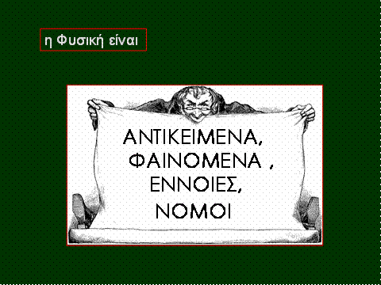
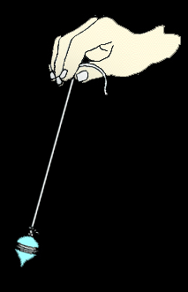 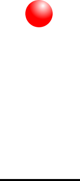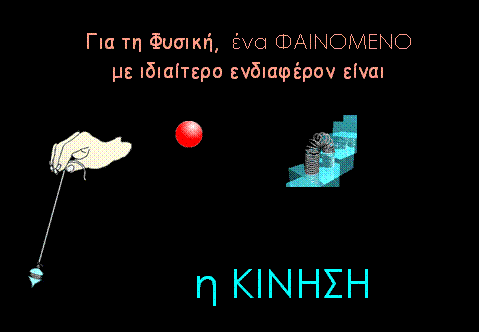
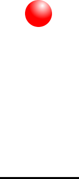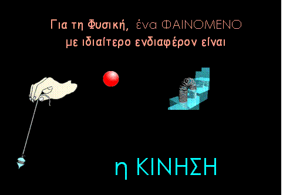
Τι το ιδιαίτερο
έχει
η ΚΙΝΗΣΗ ;
Σε πρώτη ματιά η
κίνηση
δεν έχει κάτι το
εντυπωσιακό.
Ωστόσο πάνω στο φαινόμενο ΚΙΝΗΣΗ,
τον 17ο
αιώνα, οικοδομήθηκε η ΦΥΣΙΚΗ
Ποιοι
ήταν οι οικοδόμοι ;
Ήταν ένα σωρό οι
ερευνητές
που συνέβαλαν στο να γίνει αυτό .
Οι μεγάλοι,
όμως πρωταγωνιστές ήταν δύο.
Ο ένας,γεννημένος
στην Ιταλία, πρότεινε τη ΜΕΘΟΔΟ
– πείραμα και
μαθηματικά –
πάνω στην οποία οικοδομήθηκε η Φυσική. Ήταν ο
Γαλιλαίος
Ο άλλος
ήταν ένας Άγγλος που θεμελίωσε τη Φυσική προτείνοντας
τους ΝΟΜΟΥΣ ΤΗΣ
ΚΙΝΗΣΗΣ και
τον ΝΟΜΟ για την
ΠΑΓΚΟΣΜΙΑ ΒΑΡΥΤΗΤΑ. Ο Ισαάκ Νεύτων.
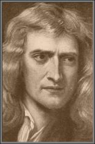
Ο Γαλιλαίος ήταν πιο
«αρχαίος»
από
τον ζωγράφο τον Γκρέκο ;
Το 1564, τη
χρονιά που γεννήθηκε
ο Γαλιλαίος, στην Πίζα,
ο Δομίνικος
Θεοτοκόπουλος
ήταν 23 ετών
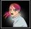Υποθέτω ότι ο Νεύτων
είναι
πολύ πιο παλιός από τον Καραϊσκάκη
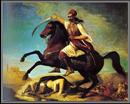
Πολύ καλά το
υποθέτεις. Ο Γεώργιος Καραϊσκάκης
γεννήθηκε 55 ολόκληρα χρόνια μετά τον θάνατο (1727)
του Isaac Newton,
όπως είναι το όνομά του στα αγγλικά
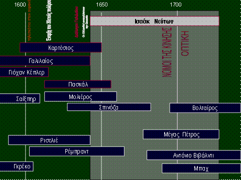
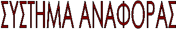
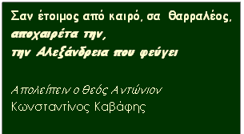
Τι
θέλει να πει ο ποιητής ;
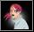Που πάει η Αλεξάνδρεια ;
Είναι
δυνατόν να φεύγει ;
Αφού
ξέρουμε ότι είναι ακόμα εκεί, στην
Αίγυπτο
|
Ο
Καβάφης, με γλώσσα ποιητική, μας λέει ότι ο
Αντώνιος αντιλαμβάνεται την
Αλεξάνδρεια να
απομακρύνεται ως
προς εκείνον |
Στη
γλώσσα της Φυσικής ο Αντώνιος απομακρύνεται
ως
προς την
Αλεξάνδρεια και
η Αλεξάνδρεια ως προς εκείνον |
ο
Einstein ταξιδεύοντας κάποτε
με ένα τρένο ρώτησε:
«
Σταματάει
σ’
αυτό το τρένο
η πόλη Crewe ; »
Ο Αϊνστάιν θεωρεί ότι το τρένο πλησιάζει την πόλη
αλλά
και η πόλη πλησιάζει το τρένο.
Και
θεωρεί τις δύο περιγραφές ισοδύναμες.
Η
Φυσική θεωρεί ότι η περιγραφή μιας οποιασδήποτε κίνησης
οποιουδήποτε
σώματος έχει νόημα μόνο εφόσον
έχουμε
προηγουμένως απαντήσει στο ερώτημα
«
Ως προς ποιο Σύστημα κινείται το σώμα ;»
Με άλλα λόγια,
κάθε κίνηση νοείται ως προς
ορισμένο ΣΥΣΤΗΜΑ ΑΝΑΦΟΡΑΣ
το οποίο η Σκέψη του ερευνητή θεωρεί ακίνητο.
Το
κινούμενο ΑΝΤΙΚΕΙΜΕΝΟ μπορεί να είναι μια μικρή μπίλια, μια σταγόνα βροχής,
μια
αθερίνα στη θάλασσα, η άκρη του τιμονιού ενός ποδήλατου, ένα μυρμήγκι,
Για να μπορέσουμε να περιγράψουμε την κίνησή
του,
με
τον τρόπο που μας έμαθε ο Γαλιλαίος, στη γλώσσα δηλαδή των μαθηματικών,
αγνοούμε
τις διαστάσεις του.
και το κινούμενο αυτό
αντικείμενο το χαρακτηρίζουμε
«σημειακό
αντικείμενο» ή «ΥΛΙΚΟ ΣΗΜΕΙΟ».
[
Γιατί το κάνουμε αυτό ; Τι
τη χρειαζόμαστε την έννοια ΥΛΙΚΟ ΣΗΜΕΙΟ;
Δεν
μας φθάνουν οι ένα σωρό άλλες έννοιες ;
Φανταζόμαστε το κινούμενο
αντικείμενο χωρίς διαστάσεις
έτσι
ώστε να «χωράει» σε ένα γεωμετρικό σημείο
οπότε
μπορούμε να μιλάμε για την ΑΠΟΣΤΑΣΗ του από ένα άλλο γεωμετρικό σημείο
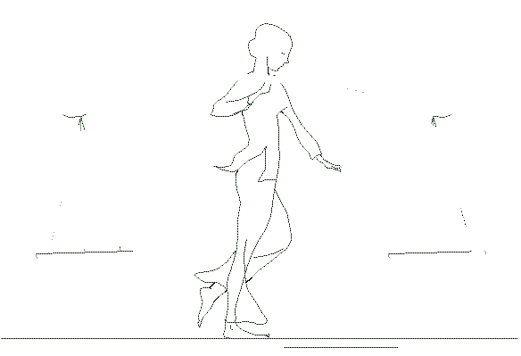και κατά συνέπεια να προσδιορίζουμε
το
«που βρίσκεται» στη γλώσσα των μαθηματικών.
Σκέψου
πόσο δύσκολο
θα
ήταν το να πρέπει
να
προσδιορίζουμε
τη
θέση μιας ολόκληρης κοπέλας
όπως
αυτή.
Μας
εξυπηρετεί επίσης το ότι, εφόσον είναι υλικό σημείο, η τροχιά του θα είναι μία
ΓΡΑΜΜΗ.
Και
η γραμμή είναι κάτι που μπορούμε να το περιγράψουμε
Το
υλικό σημείο είναι τελικά ένα μοντέλο
το
οποίο επινοήσαμε για να μπορέσουμε να «βάλουμε μαθηματικά» στην καθημερινή
εμπειρία
και
να οικοδομήσουμε τη Φυσική
Εξάλλου
αργότερα, σε μεγαλύτερη δηλαδή τάξη,
βασιζόμενοι
στη θεωρία της κίνησης του υλικού σημείου,
θα
περιγράψουμε και την κίνηση ενός σώματος με διαστάσεις
Προσδιορίζουμε
ένα Σύστημα Αναφοράς
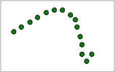- όποιο θέλουμε εμείς,
λόγου
χάρη το γήινο έδαφος –
το
οποίο θεωρούμε ακίνητο
και
παρατηρούμε ότι
καθώς
κυλάει ο χρόνος
το
αντικείμενο
αλλάζει
συνεχώς θέση ως προς αυτό το Σύστημα Αναφοράς
Εφόσον
το κινούμενο αντικείμενο
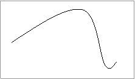είναι ΥΛΙΚΟ ΣΗΜΕΙΟ,
όλα
τα γεωμετρικά σημεία από τα οποία πέρασε
βρίσκονται σε μία αόρατη ΓΡΑΜΜΗ.
Είναι
η ΤΡΟΧΙΑ του.
Μπορούμε
να τη δούμε
μόνο
με το «βλέμμα της Σκέψης»
Η
μορφή της καθορίζεται από το ποιο ήταν το Σύστημα Αναφοράς
Αν
αλλάξουμε Σύστημα Αναφοράς η τροχιά της θα είναι γενικά διαφορετική
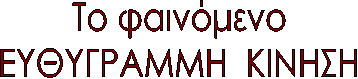
Το
πρώτο από τα ΦΑΙΝΟΜΕΝΑ που θα μας απασχολήσουν είναι
η
ΕΥΘΥΓΡΑΜΜΗ ΚΙΝΗΣΗ
Και
αρχικά το μόνο που μας ζητείται να κάνουμε γι αυτό είναι να το ΠΕΡΙΓΡΑΨΟΥΜΕ
Αργότερα
θα αναρωτηθούμε και για το «πώς» μπορούμε
να
το ΕΡΜΗΝΕΥΟΥΜΕ και να το ΠΡΟΒΛΕΠΟΥΜΕ
Το
κινούμενο ΑΝΤΙΚΕΙΜΕΝΟ το θεωρούμε ΥΛΙΚΟ ΣΗΜΕΙΟ
Παρατηρούμε
ότι καθώς κυλάει ο χρόνος αλλάζει συνεχώς θέση
αλλά
και κινείται ΙΣΙΑ προς την ίδια πάντα
κατεύθυνση,
χωρίς να στρίβει
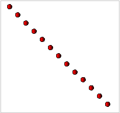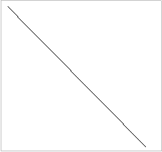
Εφόσον
κινείται ίσια η τροχιά του θα είναι μία ΕΥΘΕΙΑ ΓΡΑΜΜΗ
Το
φαινόμενο λέγεται ΕΥΘΥΓΡΑΜΜΗ ΚΙΝΗΣΗ
Για
να περιγράψουμε το φαινόμενο κάνουμε αυτό που κάνουμε σε οποιαδήποτε κίνηση
Χρησιμοποιούμε
τις έννοιες ΧΡΟΝΟΣ, ΧΩΡΟΣ και ΤΑΧΥΤΗΤΑ.
Τον
ΧΡΟΝΟ που διαρκεί «κάποιο φαινόμενοι» τον λέμε και ΧΡΟΝΙΚΟ ΔΙΑΣΤΗΜΑ .
Τον συμβολίζουμε με το
γράμμα t
Τον
μετράμε με χρονόμετρο. Ως μονάδα μέτρησης
η
Φυσική χρησιμοποιεί το ένα δευτερόλεπτο. Γράφουμε 1 s
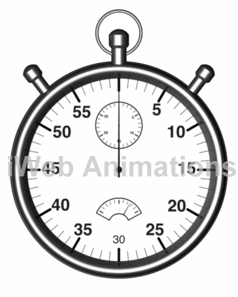
Τι
λέγεται
«ένα
δευτερόλεπτο» ;
Ο
ορισμός της μονάδας 1 s
βασίστηκε
στην κίνηση του πλανήτη Γη.
ΤΟ
ΔΕΥΤΕΡΟΛΕΠΤΟ
 δηλαδή ορίστηκε
δηλαδή ορίστηκε
ως
το 1/86400
της
διάρκειας μιας περιστροφή
της
Γης .
Εδώ
και μερικές δεκαετίες
ο
άλλαξε ο τρόπος που ορίζεται
χωρίς
όμως να αλλάξει
η
ποσότητα χρόνου στην οποία αντιστοιχεί
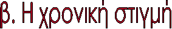
Με
το χρονόμετρο μετράμε
ένα χρονικό διάστημα.
Συχνά
όμως λέμε ότι
«
αυτό συνέβη εκείνη τη χρονική στιγμή» .
Τι γίνεται με τη ΧΡΟΝΙΚΗ ΣΤΙΓΜΗ ;
Η
χρονική στιγμή δεν έχει διάρκεια .
Είναι όπως ένα σημείο της
Γεωμετρίας
που
δεν «πιάνει καθόλου χώρο»
Ενώ
το χρονικό διάστημα απαντά στο ερώτημα
«
ΠΟΣΟ ΔΙΑΡΚΕΙ ;»
η
χρονική στιγμή απαντά στο «ΠΟΤΕ;»
Για μένα η ΧΡΟΝΙΚΗ ΣΤΙΓΜΗ
είναι «ασύληπτη» .
Υπάρχει
κι ύστερα δεν υπάρχει
Πώς
μπορούμε να τη μετρήσουμε ;
Τη
χρονική στιγμή δεν τη μετράμε,αλλά
μπορούμε να την προσδιορίσουμε
Για να την προσδιορίσουμε
κάνουμε μια συμφωνία .
Θεωρούμε μια ορισμένη χρονική στιγμή, ας πούμε
την «μεσάνυχτα», ως Αρχή των χρόνων.
Στη
συνέχεια μετράμε το χρονικό διάστημα από τα μεσάνυχτα μέχρι τώρα.
Αν
τη χρονική αυτή διάρκεια τη βρούμε 7 ώρες, είκοσι λεπτά και 3 δευτερόλεπτα ώρες
λέμε
ότι τώρα είναι « 7 h 20 min 3 s ή 7.20.03 »
Αυτός που περιγράφει
μια κίνηση μπορεί να διαλέγει
όποια
στιγμή θέλει ως Αρχή των χρόνων;
Μπορεί
να
επιλέγει
οποιαδήποτε
.


Την
απόσταση δύο γεωμετρικών σημείων
τη
μετράμε με μετροταινία
Γι
α μικρές αποστάσεις μας εξυπηρετεί και το υποδεκάμετρο είναι
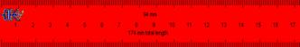
Ως μονάδα μέτρησης
η
Φυσική χρησιμοποιεί το ένα μέτρο «των Γάλλων» . Γράφουμε 1 m
Τι
θα πει
«το
ένα μέτρο των Γάλλων» ;
Την
περίοδο της Γαλλικής Επανάστασης ξεκίνησε μια προσπάθεια για την καθιέρωση
μονάδων μέτρησης που θα ίσχυαν
για
όλους τους λαούς και σε όλες τις εποχές
Το
1791 η Γαλλική Εθνοσυνέλευση όρισε μια επιτροπή από επιστήμονες
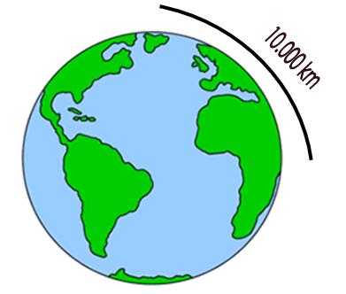για να μελετήσει το
πρόβλημα.
Στο
ζήτημα της μονάδας μήκους
η
άποψη που κυριάρχησε ήταν η νέα μονάδα
-
για να μπορεί να γίνει παγκόσμια αποδεκτή –
να
βασίζεται
στο
μέγεθος του πλανήτη Γη .
Μια
ειδική αποστολή
ανέλαβε
να μετρήσει
την
απόσταση Δουνκέρκης - Βαρκελώνης
πάνω
στον μεσημβρινό
που
περνάει από το Αστεροσκοπείο του Παρισιού.
απόσταση
μετρήθηκε,
ύστερα
από οκτώ χρόνια,
και
με τη βοήθεια του πολικού αστέρα υπολογίστηκε
η
απόσταση Βόρειου Πόλου – Ισημερινού
Ένα
βολικό κλάσμα
της
απόστασης αυτής
-το
ένα προς 10.000.000 -ορίστηκε ως η νέα
μονάδα μήκους που ονομάστηκε « 1 mètre ».
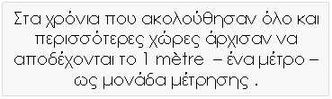
Εδώ
και μερικές δεκαετίες άλλαξε ο τρόπος που ορίζεται χωρίς όμως
να αλλάξει η «ποσότητα απόστασης» στην οποία αντιστοιχεί

Παρατηρούμε
ένα αυτοκίνητο που τρέχει
και θέλουμε να απαντήσουμε στο
ερώτημα
«που βρίσκεται;»
σε κάποια στιγμή .
Μια
σκέψη είναι να βρούμε «πόσο απέχει»
από
ένα σημείο που θα έχουμε συμφωνήσει να είναι η Αρχή.
Από μια κολώνα λόγου χάρη.
Αν
ξέρουμε ότι
«τη στιγμή αυτή απέχει από την κολώνα 26
μέτρα»
σημαίνει ότι ξέρουμε τη στιγμή εκείνη τη θέση
του .
Την επόμενη στιγμή η θέση του θα είναι διαφορετική
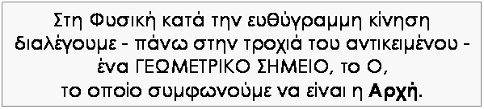
Η
απόσταση του γεωμετρικού σημείου Ρ στο οποίο βρίσκεται «τώρα»
από το γεωμετρικό σημείο Ο - το οποίο
έχουμε συμφωνήσει να το θεωρούμε «Αρχή τωναξόνων» –
είναι
η ΘΕΣΗ του αντικειμένου . Τη συμβολίζουμε με το γράμμα x.
Κάθε
στιγμή το κινούμενο αντικείμενο βρίσκεται σε ένα σημείο διαφορετικό.
Τη στιγμή που βρίσκεται σε σημείο τέτοιο που να απέχει 7 μέτρα από την Αρχή Ο
λέμε
ότι η ΘΕΣΗ του είναι 7 μέτρα και γράφουμε x = 7 m.
Μια
επόμενη στιγμή που απέχει - από το Ο- 11
μέτρα
λέμε
ότι η ΘΕΣΗ του είναι 11μέτρα και γράφουμε x = 11 m
Κατανοούμε
επίσης ότι στο χρονικό διάστημα από τη μια στιγμή στην άλλη το αντικείμενο
μετακινήθηκε κατά 4 μέτρα
Αν
κατάλαβα καλά
η ΑΠΟΣΤΑΣΗ απαντά στο «πόσο
απέχουν δύο σημεία ;» και τη ΜΕΤΡΑΜΕ
με μια μετροταινία
Ενώ
η ΘΕΣΗ απαντά στο « που βρίσκεται ένα
σημείο;» και την ΠΡΟΣΔΙΟΡΙΖΟΥΜΕ
,
σε
σχέση με μία Αρχή, αφού μετρήσουμε την απόσταση από την Αρχή
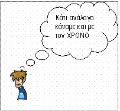
Έχεις καταλάβει
πάρα
πολύ καλά
|
η
ΑΠΟΣΤΑΣΗ απαντά στο
«πόσο απέχουν δύο
σημεία ;»
και τη ΜΕΤΡΑΜΕ με
μια μετροταινία |
Το ΧΡΟΝΙΚΟ ΔΙΑΣΤΗΜΑ απαντά
στο «πόσο διαρκεί» και
το ΜΕΤΡΑΜΕ με χρονόμετρο |
|
η
ΘΕΣΗ απαντά στο «
που βρίσκεται ένα σημείο;» και
την ΠΡΟΣΔΙΟΡΙΖΟΥΜΕ , σε
σχέση με μία Αρχή, αφού
μετρήσουμε την
απόσταση από
την Αρχή |
Ενώ
η ΧΡΟΝΙΚΗ ΣΤΙΓΜΗ απαντά
στο «
πότε ;» και την ΠΡΟΣΔΙΟΡΙΖΟΥΜΕ σε
σχέση με μία
Αρχή των χρόνων, αφού
μετρήσουμε το
χρονικό διάστημα από την Αρχή |